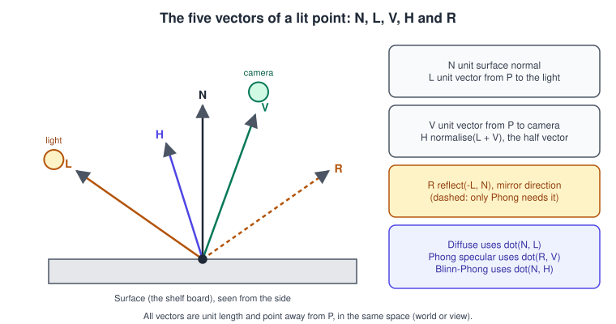
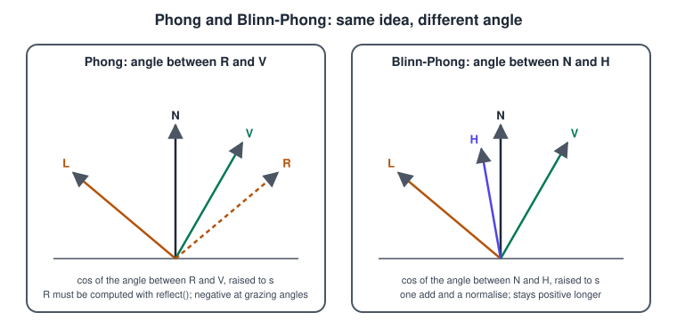
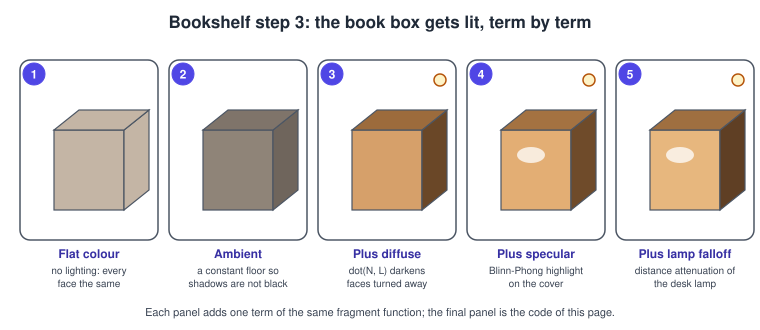

Lighting Fundamentals in Metal
|
This content was generated with the assistance of AI and should be verified against the official documentation before being relied on in production. |
A rendered triangle has a colour, but a rendered book has a shape, and the shape is only visible when light falls on it. Lighting is the part of the fragment function that turns a surface description (position, normal, base colour) and a few lights into a final colour. This page teaches the classic empirical models, Lambert diffuse and Blinn-Phong specular, because they are cheap, easy to reason about and the foundation of every later model: the physically based material of PBR Materials keeps the same vectors and replaces only the formula. It covers the vectors, how normals travel from the model to the screen, the three kinds of light, how to loop over several lights, the colour-space rules that decide whether the result looks right, and a complete Metal example.
The facts were checked in November 2026. The code is Swift 6 and MSL, written against the 26 SDKs and the Metal 4 core API with the Metal 3 encoder as the main path, because the lighting maths does not depend on the API generation; the few lines where Metal 4 differs are shown separately. MSL 4.0 is enough (MSL 4.1 belongs to the 27 operating systems and adds nothing used here). Metal 4 needs an A14 Bionic or later or a Mac with Apple silicon; the Metal 3 path runs on every Metal-capable device. The project, the bridging header and the vertex descriptor are set up in Setting Up Xcode and a Metal Project and Buffers and Vertex Descriptors; textures are explained in Textures and Samplers.
This is step 3 of the Metal Bookshelf running example: the book box from the previous pages (a multiplatform SwiftUI app hosting an MTKView)
rotates under a desk lamp, textured with the cover image
(bookshelf-cover.png) and lit with Blinn-Phong. The same concepts for other libraries are in
Lighting and Shading Models, Lighting with Blinn-Phong in OpenGL
and Lighting in WebGL Shaders. The shadow test that makes the lamp’s light stop at the books is
the next step, in Shadows.

Five vectors describe a lit point

Everything an empirical model needs at a point P can be written with five unit vectors, all pointing away from P and all expressed in the same space:
| Vector | Meaning | How the shader gets it |
|---|---|---|
|
Surface normal |
Interpolated from the vertices, renormalised, optionally replaced by a normal map |
|
From P toward the light |
|
|
From P toward the camera |
|
|
Half vector between L and V |
|
|
Mirror reflection of L about N |
|
The same convention (vectors point away from the surface) is used by every shading page of this section; mixing it up, for example passing L
pointing from the light to reflect, is the most common reason a highlight appears on the wrong side of an object. The vectors need a common space.
World space is the simplest: positions and normals are transformed to world space in the vertex function, and the camera position is a uniform. View
space is cheaper for the camera (V is the negated position) but needs the lights transformed too. This page uses world space; the spaces and the matrices that
link them are in Transforms and Camera and Coordinate Spaces and Transforms.
Normals
The normal is stored per vertex, travels through the vertex function and arrives in the fragment function interpolated across the triangle. Three rules matter.
-
Transform it with the normal matrix, not the model matrix. A normal is a direction that must stay perpendicular to the surface. Under a non-uniform scale the model matrix tilts it. The correct matrix is the inverse transpose of the upper-left 3x3 of the model matrix, \(\mathbf{N}_{ world } = (M^{ -1 })^{ T }\,\mathbf{N}_{ object }\). For rotations and uniform scales the model matrix itself would do, which hides the bug until a squashed book appears. Compute the matrix on the CPU once per object, as the example does, not per vertex.
-
Renormalise in the fragment function. Interpolating two unit vectors yields a shorter one. The error is small on smooth meshes and visible on low-poly ones, and
normalizeis cheap. -
Face the right way. A closed mesh has outward normals, which
MDLMeshgenerates for a box withinwardNormals: false. A box that is lit from the inside has them reversed. Back-face culling (setCullMode(.back)with the default counter-clockwise front face) hides the mistake from the outside and makes the geometry vanish instead of looking dark; if a mesh looks inside out, check winding and normals together.
Flat shading (one normal per triangle) and smooth shading (shared, averaged vertex normals) differ only in the data: a cube with 24 vertices (four per face) is
flat shaded, the same cube with 8 shared vertices would be smooth and look like a pillow. Model I/O can compute normals with addNormals(withAttributeNamed:creaseThreshold:)
when an asset has none; loading assets is in Models with Model I/O and USD.
Lambert diffuse
A matte surface scatters light equally in every direction, so its brightness depends only on the angle between the normal and the light. For a base colour \(\rho\) (the albedo) and a light of colour \(\mathbf{c}_l\):
\[\mathbf{c}_{ diffuse } = \rho\,\mathbf{c}_l\,\max(\mathbf{N}\cdot\mathbf{L},\,0)\]
The max clamps faces turned away from the light to zero instead of letting them go negative and subtract light from other lights. The physically based
version divides \(\rho\) by \(\pi\); the empirical version here leaves it out and folds the factor into the light intensity, which is why the
intensity numbers of the example are about 3 for a lamp. Whichever convention you pick, write it down: an unstated convention is the usual reason two
engines disagree on brightness.
Phong and Blinn-Phong specular
Specular reflection is the bright highlight where a surface mirrors the light toward the eye. Phong measures how close the mirror direction R is to the view V:
\[\mathbf{c}_{ spec } = k_s\,\mathbf{c}_l\,\max(\mathbf{R}\cdot\mathbf{V},\,0)^{ s }\]
Blinn-Phong measures instead how close the half vector H is to the normal, which is the same question asked differently (when V equals R, H equals N):
\[\mathbf{c}_{ spec } = k_s\,\mathbf{c}_l\,\max(\mathbf{N}\cdot\mathbf{H},\,0)^{ s }\]

The parameters are the specular strength \(k_s\) (how much light the highlight returns, 0 to 1) and the shininess \(s\), the exponent that makes the highlight small and sharp as it grows (about 8 for a rough cover, 64 to 256 for varnished wood). Blinn-Phong is the better default for three reasons:
-
It needs no
reflect, only an add and anormalize. -
It stays positive for longer at grazing angles, where \(\mathbf{R}\cdot\mathbf{V}\) becomes negative and Phong cuts the highlight off in a hard line.
-
Its highlight is wider for the same exponent, so to match a Phong look use an exponent roughly four times larger.
Both models are not energy conserving: raising shininess narrows the highlight without making it brighter in proportion, so a sharp highlight looks too dim compared with real materials. A common repair is to scale the specular term by the normalisation factor \((s + 8) / (8\pi)\), which keeps the total reflected energy about constant as the exponent changes. Neither model has a Fresnel term (real surfaces reflect more at grazing angles) or a notion of metal; that is what PBR Materials adds. A third term, the ambient light, stands in for all the indirect light the model does not trace: a constant colour times the base colour, enough to keep faces turned away from the lamp from going pure black. The full empirical equation is
\[\mathbf{c} = k_a\,\rho\,\mathbf{c}_{ ambient } + \sum_{ i }\left(\rho\,\max(\mathbf{N}\cdot\mathbf{L}_i, 0) + k_s\,\max(\mathbf{N}\cdot\mathbf{H}_i, 0)^{ s }\right)\mathbf{c}_{ l,i }\,a_i\]
where \(a_i\) is the attenuation of light i, described next.
Light types
| Type | Defined by | L and attenuation | Typical use |
|---|---|---|---|
Directional |
A direction and a colour |
L is the same everywhere (the negated direction); no attenuation |
Sun and moon: so far away that rays are parallel |
Point |
A position, a colour and a radius |
|
The desk lamp of the Bookshelf scene, candles, bulbs |
Spot |
A position, a direction, a colour, an inner and an outer cone angle |
As a point light, multiplied by a smooth cone factor |
Flashlights, stage lights |
A point light’s brightness falls with the square of the distance, \(1/d^2\). A pure inverse-square law never reaches zero, which forces every fragment to evaluate every light, so engines multiply it by a smooth window that reaches zero at the light’s radius \(r\):
\[a(d) = \frac{\operatorname{saturate}\left(1 - (d/r)4\right)2}{d^2 + \epsilon}\]
The small \(\epsilon\) (0.01 is fine) avoids a division by zero when a fragment sits on the light. The older fixed-function form
\(1/(k_c + k_l d + k_q d^2)\) with hand-tuned constants still works and is easier to art-direct; it just lacks a hard range, so it cannot cull lights. A spot light adds
\(\operatorname{smoothstep}(\cos\theta_{ outer }, \cos\theta_{ inner }, \mathbf{D}\cdot(-\mathbf{L}))\) where D is the unit direction the spot points along
(from the light toward the scene) and \(-\mathbf{L}\) is the direction from the light to P. Comparing cosines avoids an acos per fragment.
Colour: do the maths in linear space
Lighting is addition and multiplication of light, which is only correct on linear values. The two places that silently break this are the base colour texture and the render target:
-
Colour textures such as the book cover are stored in sRGB. Load them with the sRGB option (
MTKTextureLoader.Option.SRGBset to true, or an_sRGBpixel format), and the sampler returns linear values in the shader. -
Write the linear result to an sRGB render target, and the hardware encodes it on store. For an
MTKViewthat meanscolorPixelFormat = .bgra8Unorm_srgb. -
Data textures (normals, roughness, metallic) are not colours and stay linear; setting
SRGBto false for them is covered on the PBR page.
If you apply sRGB twice (an sRGB texture into an sRGB target is correct, a manually gamma-corrected shader writing to an sRGB target is not) the image looks washed out; if you apply it zero times, midtones look too dark and the gradient of a lit sphere is too contrasty. HDR targets and tone mapping are in Image-Based Lighting and HDR and Color Spaces, HDR and Tone Mapping.
Complete example: the lit rotating book

The example has four files. Shared structures live in a header included by both languages, so a field cannot drift out of sync.
// ShaderTypes.h (add it to the bridging header for Swift, #include it from the .metal file)
#ifndef ShaderTypes_h
#define ShaderTypes_h
#ifdef __METAL_VERSION__
#define NS_ENUM(_type, _name) enum _name : _type _name; enum _name : _type
typedef metal::int32_t EnumBackingType;
#else
#import <Foundation/Foundation.h>
typedef NSInteger EnumBackingType;
#endif
#include <simd/simd.h>
typedef NS_ENUM(EnumBackingType, BufferIndex) {
BufferIndexVertices = 0,
BufferIndexFrame = 1,
BufferIndexModel = 2,
BufferIndexMaterial = 3,
BufferIndexLights = 4,
BufferIndexLightCount = 5
};
typedef NS_ENUM(EnumBackingType, TextureIndex) {
TextureIndexBaseColor = 0
};
typedef NS_ENUM(EnumBackingType, LightType) {
LightTypeDirectional = 0,
LightTypePoint = 1
};
typedef struct {
matrix_float4x4 viewProjection;
vector_float3 cameraPosition; // world space
vector_float3 ambientColor; // linear
} FrameUniforms;
typedef struct {
matrix_float4x4 model;
matrix_float3x3 normalMatrix; // inverse transpose of model's upper 3x3
} ModelUniforms;
typedef struct {
vector_float3 baseColor; // multiplied with the texture
float shininess; // Blinn-Phong exponent
float specularStrength; // k_s
float ambient; // k_a
} Material;
typedef struct {
vector_float3 position; // point: world position, directional: direction the light travels
vector_float3 color; // linear
float intensity;
float radius; // point lights only
unsigned int type; // a LightType value
} Light;
#endifTypes built from simd vectors have the same size and alignment in Swift, C and MSL: a three-component vector occupies 16 bytes, so the float that follows baseColor
starts at offset 16, not 12, in all three languages (use packed_float3 in both languages only when you need the tight 12-byte layout, for example in a vertex buffer). The type member is a plain
unsigned int instead of the enum type, because the enum’s backing type is NSInteger (8 bytes) on the Swift side and 4 bytes in MSL. Arrays of structures are not placed in the shared structs because Swift imports a C array as a
tuple; lights go in their own buffer instead.
// Lit.metal
#include <metal_stdlib>
#include "ShaderTypes.h"
using namespace metal;
struct VertexIn {
float3 position [[attribute(0)]];
float3 normal [[attribute(1)]];
float2 uv [[attribute(2)]];
};
struct VertexOut {
float4 position [[position]];
float3 worldPosition;
float3 worldNormal;
float2 uv;
};
vertex VertexOut vertex_lit(VertexIn in [[stage_in]],
constant FrameUniforms &frame [[buffer(BufferIndexFrame)]],
constant ModelUniforms &model [[buffer(BufferIndexModel)]])
{
float4 world = model.model * float4(in.position, 1.0);
VertexOut out;
out.position = frame.viewProjection * world;
out.worldPosition = world.xyz;
out.worldNormal = model.normalMatrix * in.normal; // not normalised here: see fragment
out.uv = in.uv;
return out;
}
// Distance attenuation with a smooth window that reaches zero at radius.
static float attenuation(float distance, float radius)
{
float x = saturate(1.0 - pow(distance / radius, 4.0));
return (x * x) / (distance * distance + 0.01);
}
fragment float4 fragment_lit(VertexOut in [[stage_in]],
constant FrameUniforms &frame [[buffer(BufferIndexFrame)]],
constant Material &material [[buffer(BufferIndexMaterial)]],
constant Light *lights [[buffer(BufferIndexLights)]],
constant uint &lightCount [[buffer(BufferIndexLightCount)]],
texture2d<float> baseColorMap [[texture(TextureIndexBaseColor)]])
{
constexpr sampler baseSampler(filter::linear, mip_filter::linear, address::repeat);
float3 albedo = material.baseColor * baseColorMap.sample(baseSampler, in.uv).rgb; // linear: texture is sRGB
float3 N = normalize(in.worldNormal);
float3 V = normalize(frame.cameraPosition - in.worldPosition);
float3 color = material.ambient * albedo * frame.ambientColor;
for (uint i = 0; i < lightCount; ++i) {
Light light = lights[i];
float3 L;
float a = 1.0;
if (light.type == LightTypeDirectional) {
L = normalize(-light.position); // position holds the travel direction
} else {
float3 toLight = light.position - in.worldPosition;
float d = length(toLight);
L = toLight / d;
a = attenuation(d, light.radius);
}
float NdotL = saturate(dot(N, L));
float3 H = normalize(L + V);
float spec = NdotL > 0.0 ? pow(saturate(dot(N, H)), material.shininess) : 0.0;
float3 radiance = light.color * light.intensity * a;
color += (albedo * NdotL + material.specularStrength * spec) * radiance;
}
return float4(color, 1.0);
}Four details are worth reading twice. saturate(x) is the MSL shorthand for clamp(x, 0, 1). The specular term is multiplied by zero when NdotL is zero, otherwise a highlight would
appear on the dark side of the object where the half vector still lines up with the normal. The constexpr sampler is compiled into the shader, so it needs no MTLSamplerState and
no binding. constant uint &lightCount is a single value bound as bytes, a pattern the next section explains.
// LitBookRenderer.swift
import MetalKit
import simd
final class LitBookRenderer: NSObject, MTKViewDelegate {
private let device: MTLDevice
private let queue: MTLCommandQueue
private let pipeline: MTLRenderPipelineState
private let depthState: MTLDepthStencilState
private let mesh: MTKMesh
private let cover: MTLTexture
private var angle: Float = 0
private var lights: [Light]
init?(view: MTKView) {
guard let device = view.device ?? MTLCreateSystemDefaultDevice(),
let queue = device.makeCommandQueue(),
let library = device.makeDefaultLibrary() else { return nil }
self.device = device
self.queue = queue
view.device = device
view.colorPixelFormat = .bgra8Unorm_srgb // hardware encodes linear to sRGB on store
view.depthStencilPixelFormat = .depth32Float
view.clearColor = MTLClearColor(red: 0.02, green: 0.02, blue: 0.03, alpha: 1)
// Vertex layout: position float3, normal float3, uv float2, one interleaved buffer (stride 32).
let vd = MTLVertexDescriptor()
vd.attributes[0].format = .float3; vd.attributes[0].offset = 0; vd.attributes[0].bufferIndex = BufferIndex.vertices.rawValue
vd.attributes[1].format = .float3; vd.attributes[1].offset = 12; vd.attributes[1].bufferIndex = BufferIndex.vertices.rawValue
vd.attributes[2].format = .float2; vd.attributes[2].offset = 24; vd.attributes[2].bufferIndex = BufferIndex.vertices.rawValue
vd.layouts[BufferIndex.vertices.rawValue].stride = 32
let mdlDescriptor = MTKModelIOVertexDescriptorFromMetal(vd)
(mdlDescriptor.attributes[0] as! MDLVertexAttribute).name = MDLVertexAttributePosition
(mdlDescriptor.attributes[1] as! MDLVertexAttribute).name = MDLVertexAttributeNormal
(mdlDescriptor.attributes[2] as! MDLVertexAttribute).name = MDLVertexAttributeTextureCoordinate
let allocator = MTKMeshBufferAllocator(device: device)
let box = MDLMesh(boxWithExtent: [0.30, 0.45, 0.12], segments: [1, 1, 1],
inwardNormals: false, geometryType: .triangles, allocator: allocator)
box.vertexDescriptor = mdlDescriptor
guard let mesh = try? MTKMesh(mesh: box, device: device) else { return nil }
self.mesh = mesh
let loader = MTKTextureLoader(device: device)
guard let cover = try? loader.newTexture(name: "bookshelf-cover", scaleFactor: 1, bundle: nil,
options: [.SRGB: true, .generateMipmaps: true]) else { return nil }
self.cover = cover
let desc = MTLRenderPipelineDescriptor()
desc.vertexFunction = library.makeFunction(name: "vertex_lit")
desc.fragmentFunction = library.makeFunction(name: "fragment_lit")
desc.vertexDescriptor = vd
desc.colorAttachments[0].pixelFormat = view.colorPixelFormat
desc.depthAttachmentPixelFormat = view.depthStencilPixelFormat
guard let pipeline = try? device.makeRenderPipelineState(descriptor: desc) else { return nil }
self.pipeline = pipeline
let ds = MTLDepthStencilDescriptor()
ds.depthCompareFunction = .less
ds.isDepthWriteEnabled = true
guard let depthState = device.makeDepthStencilState(descriptor: ds) else { return nil }
self.depthState = depthState
// A warm desk lamp and a dim directional fill.
lights = [
Light(position: [0.6, 0.8, 0.9], color: [1.0, 0.85, 0.65], intensity: 3.0,
radius: 4.0, type: UInt32(LightType.point.rawValue)),
Light(position: [-0.4, -1.0, -0.3], color: [0.3, 0.35, 0.5], intensity: 0.3,
radius: 0, type: UInt32(LightType.directional.rawValue))
]
super.init()
}
func mtkView(_ view: MTKView, drawableSizeWillChange size: CGSize) {}
func draw(in view: MTKView) {
guard let pass = view.currentRenderPassDescriptor,
let drawable = view.currentDrawable,
let commands = queue.makeCommandBuffer(),
let encoder = commands.makeRenderCommandEncoder(descriptor: pass) else { return }
angle += 0.01
let aspect = Float(view.drawableSize.width / max(view.drawableSize.height, 1))
let eye = simd_float3(0, 0.3, 1.6)
let view4 = lookAt(eye: eye, center: [0, 0, 0], up: [0, 1, 0])
let proj = perspective(fovY: .pi / 3, aspect: aspect, near: 0.1, far: 20)
var frame = FrameUniforms(viewProjection: proj * view4, cameraPosition: eye, ambientColor: [0.12, 0.13, 0.16])
let modelMatrix = rotationY(angle)
let upper = simd_float3x3(columns: (simd_float3(modelMatrix.columns.0.x, modelMatrix.columns.0.y, modelMatrix.columns.0.z),
simd_float3(modelMatrix.columns.1.x, modelMatrix.columns.1.y, modelMatrix.columns.1.z),
simd_float3(modelMatrix.columns.2.x, modelMatrix.columns.2.y, modelMatrix.columns.2.z)))
var model = ModelUniforms(model: modelMatrix, normalMatrix: simd_transpose(simd_inverse(upper)))
var material = Material(baseColor: [1, 1, 1], shininess: 32, specularStrength: 0.4, ambient: 1.0)
var lightCount = UInt32(lights.count)
encoder.setRenderPipelineState(pipeline)
encoder.setDepthStencilState(depthState)
encoder.setCullMode(.back)
encoder.setVertexBytes(&frame, length: MemoryLayout<FrameUniforms>.stride, index: BufferIndex.frame.rawValue)
encoder.setVertexBytes(&model, length: MemoryLayout<ModelUniforms>.stride, index: BufferIndex.model.rawValue)
encoder.setFragmentBytes(&frame, length: MemoryLayout<FrameUniforms>.stride, index: BufferIndex.frame.rawValue)
encoder.setFragmentBytes(&material, length: MemoryLayout<Material>.stride, index: BufferIndex.material.rawValue)
encoder.setFragmentBytes(lights, length: MemoryLayout<Light>.stride * lights.count, index: BufferIndex.lights.rawValue)
encoder.setFragmentBytes(&lightCount, length: MemoryLayout<UInt32>.stride, index: BufferIndex.lightCount.rawValue)
encoder.setFragmentTexture(cover, index: TextureIndex.baseColor.rawValue)
for (i, vb) in mesh.vertexBuffers.enumerated() {
encoder.setVertexBuffer(vb.buffer, offset: vb.offset, index: i)
}
for sub in mesh.submeshes {
encoder.drawIndexedPrimitives(type: sub.primitiveType, indexCount: sub.indexCount,
indexType: sub.indexType, indexBuffer: sub.indexBuffer.buffer,
indexBufferOffset: sub.indexBuffer.offset)
}
encoder.endEncoding()
commands.present(drawable)
commands.commit()
}
}
// Matrix helpers for Metal's clip space: x and y in -1...1, z in 0...1, column-major.
func perspective(fovY: Float, aspect: Float, near: Float, far: Float) -> simd_float4x4 {
let y = 1 / tan(fovY * 0.5), x = y / aspect, z = far / (near - far)
return simd_float4x4(columns: (simd_float4(x, 0, 0, 0), simd_float4(0, y, 0, 0),
simd_float4(0, 0, z, -1), simd_float4(0, 0, z * near, 0)))
}
func lookAt(eye: simd_float3, center: simd_float3, up: simd_float3) -> simd_float4x4 {
let f = simd_normalize(center - eye), s = simd_normalize(simd_cross(f, up)), u = simd_cross(s, f)
return simd_float4x4(columns: (simd_float4(s.x, u.x, -f.x, 0), simd_float4(s.y, u.y, -f.y, 0),
simd_float4(s.z, u.z, -f.z, 0),
simd_float4(-simd_dot(s, eye), -simd_dot(u, eye), simd_dot(f, eye), 1)))
}
func rotationY(_ a: Float) -> simd_float4x4 {
let c = cos(a), s = sin(a)
return simd_float4x4(columns: (simd_float4(c, 0, -s, 0), simd_float4(0, 1, 0, 0), simd_float4(s, 0, c, 0), simd_float4(0, 0, 0, 1)))
}Source: MetalKit: MTKView and Model I/O: MDLMesh
setVertexBytes and setFragmentBytes copy small, frequently changing data straight into the command stream, so there is no buffer to manage. The documented limit is 4 KB per call;
above that, use an MTLBuffer (see Buffers and Vertex Descriptors). The matrix helpers use the Metal clip space of
Math for 3D: z runs from 0 to 1, unlike OpenGL’s -1 to 1, which is the most common reason a perspective copied from an OpenGL guide clips the near half of the scene.
The Metal 4 binding variant
The lighting maths and the shaders are identical under Metal 4. What changes is how data reaches the encoder: instead of setFragmentBytes, the data lives in an MTLBuffer (or a slice of a ring buffer), its GPU address goes into an
MTL4ArgumentTable, and the table is attached to the MTL4RenderCommandEncoder for the stages that read it. The encoder comes from a reusable MTL4CommandBuffer, and the buffers must be in a residency set that is attached to the queue
or the command buffer. The skeleton, with the frame, command-allocator and residency details left to
Hello Triangle with Metal 4:
// Setup, once: a table with room for the buffer and texture slots the shaders use.
let tableDesc = MTL4ArgumentTableDescriptor()
tableDesc.maxBufferBindCount = 8
tableDesc.maxTextureBindCount = 2
let table = try device.makeArgumentTable(descriptor: tableDesc)
// Per frame, after writing uniforms into frameBuffer, lightBuffer and so on (all in the residency set):
table.setAddress(frameBuffer.gpuAddress, index: BufferIndex.frame.rawValue)
table.setAddress(modelBuffer.gpuAddress, index: BufferIndex.model.rawValue)
table.setAddress(materialBuffer.gpuAddress, index: BufferIndex.material.rawValue)
table.setAddress(lightBuffer.gpuAddress, index: BufferIndex.lights.rawValue)
table.setAddress(lightCountBuffer.gpuAddress, index: BufferIndex.lightCount.rawValue)
table.setTexture(cover.gpuResourceID, index: TextureIndex.baseColor.rawValue)
commandBuffer.beginCommandBuffer(allocator: allocator)
if let pass = view.currentMTL4RenderPassDescriptor,
let encoder = commandBuffer.makeRenderCommandEncoder(descriptor: pass) {
encoder.setRenderPipelineState(pipeline)
encoder.setDepthStencilState(depthState)
encoder.setCullMode(.back)
encoder.setArgumentTable(table, stages: [.vertex, .fragment])
// draw calls as before
encoder.endEncoding()
}
commandBuffer.endCommandBuffer()Metal 4 has no equivalent of setBytes: small constants are written into a buffer you own, and the argument table holds only addresses. Reading a buffer that is not resident, or one a previous frame is still using, are the two new ways to get garbage;
see Synchronization and Barriers. A vertex-stage and fragment-stage table can be the same object, as above, because setArgumentTable(_:stages:) takes a stage set.
Several lights
The fragment function above already loops over a buffer of lights. A few rules keep that loop honest.
-
Count and layout. Pass the count separately (as above) or put it in the frame struct. Reading past the end of the buffer returns garbage, not an error, unless shader validation is on.
-
Cost. The loop costs one iteration of the whole lighting formula per light per fragment. Forward rendering with a few lights (a lamp and a fill) is cheap; with dozens, use Deferred and Tile Shading, which shades each pixel once per light that actually reaches it.
-
Constant count. If the number of lights is known at pipeline creation, make it a function constant (
constant uint lightCount [[function_constant(0)]]) so the compiler can unroll the loop. This is explained in The Metal Shading Language. -
Intensity budget. Several lights add. A scene lit by four lamps of intensity 3 is four times brighter than one; clamp or tone-map the final colour rather than lowering each light blindly.
A spot light needs three more fields (direction and two cone cosines); adding them to Light and a third branch to the loop is a direct extension. The structure is also what image-based lighting
extends: the environment is one more light that surrounds the object.
Common mistakes
| Symptom | Likely cause |
|---|---|
Object is black |
Normals missing from the vertex descriptor (the attribute reads zeros), |
Lighting is flat and the same on every face |
Normals not transformed, or all normals pointing the same way after a wrong attribute offset in the descriptor |
Highlight is on the wrong side or follows the camera |
L or V pointing toward the surface instead of away, or |
Lighting changes when the object is scaled non-uniformly |
The model matrix is used on normals instead of the inverse transpose |
Everything looks washed out |
sRGB applied twice: a gamma-corrected shader writing to a |
Everything looks too dark and contrasty |
No sRGB decode of the base colour texture, or a non-sRGB render target |
Bands and sparkles on specular |
Shininess too high for a low-poly mesh with interpolated normals; shade per fragment, not per vertex |
Performance notes
-
Per-fragment lighting (the example) costs one
normalize, onepowand a few multiplies per light.powwith a constant exponent is cheaper to approximate; for shininess values that change per material, keeppow. -
Compute vertex-level quantities (the normal matrix, light direction for a directional light) once on the CPU or in the vertex function, not in the fragment function.
-
Use half precision (
half3,half) for colours and normalised vectors when the quality is acceptable. Apple GPUs execute 16-bit arithmetic with higher throughput and lower register pressure than 32-bit; keep positions and distances infloat. -
Keep uniform data small and tightly packed; each separate
setFragmentBytesis a copy into the command stream. -
Shadows multiply the number of draws; the cheapest shadowing for the lamp is a single shadow map, described in Shadows.
What changed since the older guides
| Older guide | Today |
|---|---|
Metal by Tutorials, 4th edition (Metal 3, Xcode 15), lighting chapters 10 and 11: a new |
The maths is unchanged. Under Metal 4 the buffers go through an |
Metal Programming Guide (Metal 2, Swift 4, Xcode 9), chapter 9 on lighting, |
|
Both books: A7 or Mac-with-any-GPU baseline |
Metal 4 needs A14 or an Apple-silicon Mac; the example’s Metal 3 path runs wherever Metal runs. |
References
-
Metal Shading Language Specification: https://developer.apple.com/metal/Metal-Shading-Language-Specification.pdf
-
Metal documentation: https://developer.apple.com/documentation/metal
-
Understanding the Metal 4 core API: https://developer.apple.com/documentation/metal/understanding-the-metal-4-core-api
-
MTKView: https://developer.apple.com/documentation/metalkit/mtkview
-
MTKTextureLoader: https://developer.apple.com/documentation/metalkit/mtktextureloader
-
Model I/O, MDLMesh: https://developer.apple.com/documentation/modelio/mdlmesh
-
Metal by Tutorials (Kodeco): https://www.kodeco.com/books/metal-by-tutorials
-
Metal Programming Guide (InformIT): https://www.informit.com/store/metal-programming-guide-tutorial-and-reference-via-9780134668949